<ion-header [translucent]="true" class="ion-no-border">
  <ion-toolbar color="secondary" mode="ios">
    <ion-buttons slot="start">
      <ion-menu-button></ion-menu-button>
    </ion-buttons>
    <ion-title></ion-title>
  </ion-toolbar>
</ion-header>

<ion-content>

  <div class="header">
    <ion-title>Mesajlar</ion-title>
    <span></span>
  </div>

  <div class="content">
    <ion-list *ngIf="talks.length>0">
      <ion-item lines="none" *ngFor="let talk of talks" (click)="goMsg(talk.to_id, talk.ad_id, talk.title, talk.name)">
        <ion-avatar slot="start">
          
        </ion-avatar>
        <ion-label class="ion-text-wrap">
          <ion-text>
            <h1>{{ talk.name }}</h1>
          </ion-text>
          <p>{{ talk.title }}</p>
        </ion-label>
        <ion-badge *ngIf="talk.badge > 0" color="success" slot="end">{{ talk.badge }}</ion-badge>
        <p *ngIf="talk.badge < 1" class=" lasttime" slot="end">{{ timeConverter(talk.last_date) }}</p>
      </ion-item>
    </ion-list>
  </div>

</ion-content>
